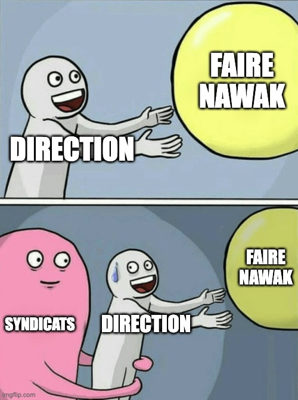

En tant qu’employé-e, nous avons une position subordonnée à notre employeur.
Il a de fait un avantage pour favoriser ses intérêts et prendre des décisions (parfois illégales) en toute tranquillité.
Pour éviter ces dérives, les salariés peuvent s'unir et créer un rapport de force, afin de représenter leurs intérêts et défendre leurs droits.
C’est connu, l’union fait la force ! Et cela prend souvent la forme d’une association : c’est le syndicat.
C’est vrai, y’a déjà le CSE pour représenter les salariés. Pourquoi en plus se syndiquer ?
Car le pouvoir du CSE est très limité !
Le syndicat étant une structure extérieure à l’entreprise, il a la liberté et les moyens d’agir.
En tant que membre d’un syndicat, je peux par exemple :
Cette union est un contre pouvoir qui empêche l’employeur de n’en faire qu’à sa tête. Cela peut même se traduire légalement avec la signature d’accords de branches entre les syndicats et les directions d’entreprises. Bref, que du bonus ! 
Alors, ça va dépendre du syndicat, mais la cotisation est souvent un pourcentage du salaire net. Chez Solidaires par exemple, pour un revenu au SMIC c’est 0,55% par mois soit environ 7€50/mois. C’est ce qui permet au syndicat d’organiser les formations, d’accompagner les salariés en justice etc.
Non ! Chacun et chacune est libre de s’investir comme il ou elle le souhaite. On peut juste adhérer et cotiser pour aider au financement des actions sans jamais y participer. Mais on peut aussi aller jusqu’à devenir représentant syndical dans son entreprise. C’est vraiment comme on veut.
Il existe une multitude de syndicats ayant des positions politiques plus ou moins modérées face au patronat et des méthodes d’actions allant de la négociation à la lutte plus militante. Vous avez peut être entendu parler :
Chaque syndicat a ensuite des groupes par secteur d’activité comme SUD Education, CGT Cheminots, etc… Il est recommandé de trouver le groupe de son secteur afin d’avoir le meilleur accompagnement possible :)
Bref, pour vous aider voici quelques noms pour avoir une idée du paysage syndical :
Oui ! Il n’y a pas besoin d’une présence syndicale, vous pouvez être le syndiqué 0 !
Si un syndicat est déjà présent, il peut y avoir un avantage de le rejoindre (fédération entre collègues). Attention cependant ! Il existe parfois des syndicats créés par les entreprises elles-mêmes pour avoir plus de contrôle sur leurs actions. Exemple chez Sopra Steria où le syndicat majoritaire Traid Union est pro patronat. Pensez à vous renseigner avant de vous inscrire.
Que nenni ! Il suffit d’adhérer à l’association en se rendant sur le site du syndicat en question et remplir le formulaire d’inscription. Ensuite il y a souvent des sessions d’accueil dans les groupes locaux pour expliquer comment ça se passe, les actions en cours, le fonctionnement, etc.
En soit non, tant que l’employeur n’est pas au courant. Et sachez qu’il ne peut vous demander cette information, cela relève de la vie privée.
Mais si cela se sait, il pourrait éventuellement vous mettre des bâtons dans les roues ou aller jusqu’à vous licencier. C’est rare mais ça arrive, bien que totalement illégal. Il est donc recommandé de ne pas le crier sur tous les toîts, ou d’en parler à des collègues de confiance. Mais dans tous les cas, sachez que vous ne serez pas seul, c’est la force du syndicalisme !
Parfois, mais ça dépend pour qui.
La direction préfère gouverner seule, tout avis contraire sera forcément perçu comme emmerdant. Sans les syndicats, les intérêts des salariés seraient moins représentés et leurs droits moins bien défendus. Plus largement, les syndicats défendent une vision du monde du travail plus humaine et plus égalitaire, qui est rarement portée par les employeurs eux-mêmes.
Ainsi, les méthodes des syndicats varient : d’une réunion autour d’une table à une manifestation devant les locaux avec des journalistes lorsque c’est nécessaire. Et s’il n’y a que la direction qui râle, c’est plutôt bon signe.